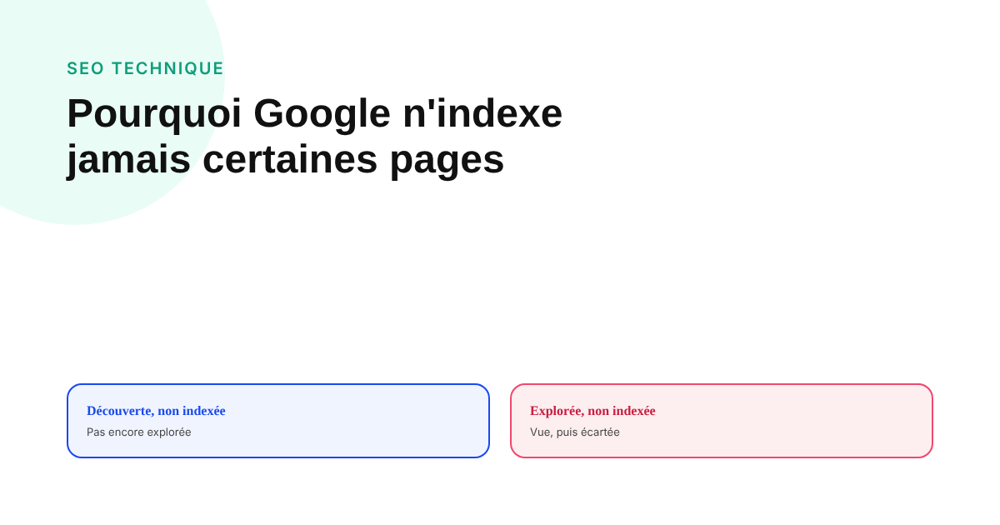
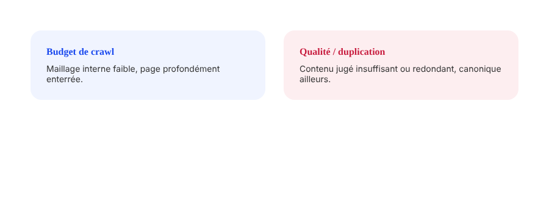

Pourquoi Google n'indexe jamais certaines de vos pages
Deux statuts Search Console se ressemblent à l'œil nu et se traitent complètement différemment : l'un signale une page que Google n'a pas encore eu le temps de regarder, l'autre une page qu'il a regardée et jugée insuffisante.

Un rapport d'indexation Search Console qui affiche des centaines de pages « non indexées » déclenche presque toujours la même réaction : la panique, suivie d'une demande d'indexation en masse. C'est souvent la mauvaise réaction, parce que « non indexée » recouvre plusieurs statuts très différents, dont certains n'appellent aucune action corrective.
« Découverte - actuellement non indexée » : Google sait, mais n'a pas encore regardé
Ce statut signifie que Google connaît l'existence de l'URL — via un lien, un sitemap ou une autre source — mais n'a pas encore pris le temps de l'explorer. C'est le signal le plus souvent lié à un budget de crawl insuffisamment orienté vers cette page : un site très volumineux, une page profondément enterrée dans l'arborescence, ou un maillage interne trop faible vers elle.
« Explorée - actuellement non indexée » : Google a regardé, et a dit non
Ce second statut est plus sérieux : Google a exploré la page, mais a choisi de ne pas l'ajouter à son index. Les causes les plus fréquentes documentées sont une qualité de contenu jugée insuffisante, une forte redondance avec une autre page déjà indexée (contenu dupliqué ou trop proche), ou une balise canonique qui pointe vers une autre URL. Confondre ce statut avec le précédent conduit à la mauvaise action : soumettre à nouveau une page que Google a déjà vue et écartée ne change rien si le problème de fond n'est pas corrigé.

Le chiffre qu'il ne faut pas citer
Des pourcentages précis de « pages jamais indexées sur le web » circulent régulièrement dans des articles SEO, parfois attribués à une même étude mais rapportés avec des valeurs contradictoires selon la source qui la cite. Aucun de ces chiffres ne résiste à une vérification sérieuse de méthodologie. Le seul diagnostic fiable reste propre à chaque site : le rapport de couverture d'indexation de sa propre Search Console, pas une statistique globale impossible à vérifier.
Ce que Google documente comme leviers d'action
Pour une page « découverte, non indexée » : renforcer le maillage interne vers elle depuis des pages déjà bien explorées, vérifier qu'elle figure dans le sitemap XML, et s'assurer que le budget de crawl global du site n'est pas gaspillé sur des pages à faible valeur (pagination infinie, filtres à facettes générant des URLs en masse). Pour une page « explorée, non indexée » : retravailler la qualité et l'unicité du contenu, vérifier qu'aucune balise canonique ne pointe ailleurs par erreur, et évaluer honnêtement si la page apporte une valeur suffisamment distincte pour mériter sa propre place dans l'index.
Le bon ordre pour diagnostiquer avant d'agir
Avant toute action, trier les pages concernées par statut précis dans Search Console plutôt que de les traiter comme un bloc unique. Une page cruciale mais seulement « découverte, non indexée » se corrige souvent avec un simple renforcement de maillage interne. Une page « explorée, non indexée » ressemblant à dix autres pages similaires du site pose une vraie question de fond : mérite-t-elle d'exister séparément, ou faudrait-il la fusionner avec une page existante déjà indexée.
FAQ
Quelle est la différence entre « Découverte - actuellement non indexée » et « Explorée - actuellement non indexée » ?
Dans le premier cas, Google connaît l'URL mais n'a pas encore pris le temps de l'explorer — souvent un signal de priorité de crawl trop basse. Dans le second, Google a exploré la page mais a choisi de ne pas l'indexer, le plus souvent parce qu'il l'a jugée de qualité insuffisante ou redondante avec une autre page déjà indexée.
Quel pourcentage de pages web ne sont jamais indexées par Google ?
Il n'existe pas de statistique fiable et largement reconnue sur ce point : les études qui circulent sur le sujet donnent des pourcentages très différents et contestés, parfois sur la même source. Mieux vaut diagnostiquer son propre site dans Search Console que de se fier à un chiffre global non vérifiable.
Soumettre une page à l'indexation dans Search Console garantit-il qu'elle sera indexée ?
Non. La demande d'indexation accélère éventuellement l'exploration, mais ne force pas l'indexation si Google juge la page de qualité insuffisante ou redondante. Soumettre la même page sans en corriger le problème de fond n'améliore généralement rien.
Envie d'un diagnostic complet de l'indexation de votre site ?
Pour aller plus loin, voir la page SEO, et l'article Structurer un site qui se positionne avec les cocons sémantiques.
Pour continuer sur ce sujet.